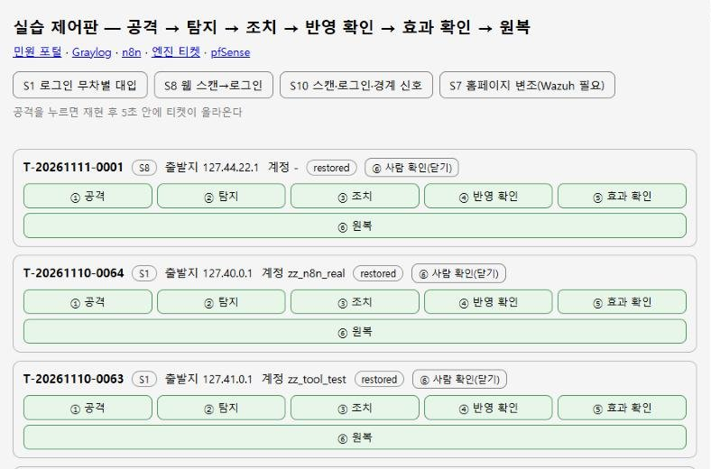

반영·효과 확인차단 목록을 다시 조회하고, 실제 요청이 403으로 막히는지 확인. 확인할 수 없으면 성공으로 치지 않음
자동 원복정해진 시간이 지나면 엔진이 해제하고 원복을 기록

실습 제어판 — 공격 버튼을 누르면 티켓이 6단계를 밟는 모습을 한 화면에서 확인 (루프백 주소·시험 계정)
반복 측정 결과 2026-11-10 · 케이스별 5회
S1로그인 무차별 대입 → IP 차단5/5
S4실패 뒤 로그인 성공 → 계정 잠금·세션 회수5/5
S7홈페이지 변조 → 기준본 복구4/5
S8웹 스캔 뒤 로그인 → IP 차단5/5
S10스캔·로그인·경계 신호 연쇄 → 앱 + 경계 차단5/5
S12요청 폭주 → 서비스가 멀쩡하면 차단하지 않음5/5
S7 5회차는 같은 파일을 10분 안에 다시 바꿔 재알림 묵음 기간에 걸린 측정 설계의 한계였고, 묵음이 끝난 뒤 복구까지 정상으로 끝났습니다. S12는 다섯 번 모두 "조치 없음"이 맞는 결과입니다.
시험하면서 찾아 고친 문제
탐지 2개가 같은 트래픽에 동시 발동
IP 차단이 두 번 기록된다
원인
S8·S10 정의가 동시에 엔진을 불러 판단·조치가 겹침
해결
엔진의 판단·조치 구간을 락으로 직렬화, 조치를 멱등으로
에러 없음 ≠ 동작함
S7 이벤트가 조용히 안 생긴다
원인
Graylog 필드 계산이 출발지 IP를 필수로 요구, 웹훅 본문엔 파일 정보가 빠져 엔진이 무시
해결
S7만 필수 조건 완화, 본문에 자산·파일 키 추가, 데이터 계약을 테스트로 고정
외부 UDP 20건 중 0건 전달
pfSense 로그가 Graylog에 안 온다
원인
Docker Desktop(WSL2)이 외부 UDP를 컨테이너로 거의 넘기지 못함
해결
호스트 syslog 중계기가 UDP로 받아 GELF/TCP로 전달, 방화벽 차단 로그 수신 확인
범위 밖으로 남긴 것 경계 차단은 상태만 재현하는 시뮬레이터이고, 엔진이 pfSense를 직접 조작하는 실제 IP 차단은 아직 없습니다. 엔진 조회 화면은 이 PC(127.0.0.1)에서만 열리며 인증은 쓰기·웹훅에만 걸려 있습니다.
04 · Team Case
S7 — 홈페이지 변조 탐지와 복구
자리마다 하나씩 맡은 케이스 중 제 몫(무결성)입니다. 자동 복구 완주는 못 해 최종 발표 네 케이스에는 들어가지 않았습니다.
사건 정의
웹 파일이 바뀌거나 새로 생겼고, 그 파일이 실제로 외부에 응답됐다.
파일 변경 경보만으로는 정상 배포·복구와 공격을 구분할 수 없어 웹 접근까지 묶었습니다. 보강 전 시험(10/22)에서는 FIM 경보가 왔는데도 외부 요청이 그 파일을 200으로 받아 갔고, 탐지·복구·티켓은 0건이었습니다.
상관 탐지FIM(추가·변경) + 웹 접근 로그를 같은 파일 키로 묶어 Graylog에서 판정
오탐 줄이기변경 뒤 해시가 기준본과 같으면(복구·정상 배포) 신호 제외, 삭제 경보는 발동 조건에서 제외
대응Active Response로 바뀐 파일은 기준본 복구, 새 파일은 격리
최소 권한자동화 계정은 포털 agent 하나의 Active Response 실행만 허용
검증 현황 3 / 6
실시간 FIM 수집추가·변경·삭제·복원 경보 0.5~1.0초 안에 도착 (10/21)
수동 복구·격리 6회복구 뒤 해시가 기준본과 전체 일치, 새 파일은 격리본 해시 일치. 복구 경보엔 탐지 신호 없음 (10/28·29)
자동 상관 탐지FIM + 같은 파일 웹 접근 → n8n 호출(관찰 모드 1회), 실제 티켓 저장·종료 1회 (11/02)
n8n → 자동 복구워크플로는 준비, 실제 실행 회차 없음
정상 배포 예외기준본 해시 목록을 규칙에 넣는 작업 미완료
보강 후 반복 5회0회 — 일정 안에 진행하지 못함
배운 점 자동 대응은 "복구가 다시 경보를 만든다"는 부작용부터 다뤄야 스스로를 공격으로 오인하지 않습니다. 복구 경보를 기준본 해시로 걸러낸 것이 이 케이스에서 가장 의미 있게 확인한 부분입니다. 못 한 자동 복구는 개인 프로젝트에서 다시 구현해 5회 중 4회 확인했습니다.
05 · Troubleshooting
네트워크 문제 해결 기록 — 팀 랩
PC 4대를 VPN으로 묶은 팀 랩에서, 추측으로 끝내지 않고 시험으로 원인을 좁혀서 고친 사례입니다.
1,300B → 3/3 도착 · 1,500B → 0/3
큰 UDP 경보가 사라진다
증상
Wazuh → Graylog로 보낸 파일 변경 경보 일부가 도착하지 않음
원인
Wazuh syslog 출력은 UDP만 지원, 약 1,400B를 넘는 UDP가 VPN 경로에서 유실
해결
UDP를 받아 TCP로 넘기는 중계를 두고 Graylog 입력을 TCP로 전환, 수신 확인
허용 규칙보다 차단 규칙 우선
VPN만 허용했는데 포트가 열려 있다
증상
agent 통신 포트를 VPN 대역만 허용했는데 학원 유선망에서도 접속됨
원인
Docker Desktop이 만든 허용 규칙이 출발지 제한 없이 포트를 열고 있었음
해결
우선 차단 규칙 추가 후 재시험, Wazuh API도 Graylog PC만 허용 + 최소 권한 계정 분리
출발지 = Docker 게이트웨이
agent 등록이 계속 거부된다
증상
IP 조건에 걸려 등록 거부, 자동 재등록으로 중복 ID 생성
원인
manager가 본 출발지가 VPN 주소가 아니라 Docker Desktop 게이트웨이
해결
중복 정리 후 수동 키 등록, 자동 등록 끔. 티켓 저장소도 IP 대신 포트·바인드 주소로 분리
남은 한계: VPN 재연결 중에는 경보 일부가 늦거나 빠질 수 있어, 시험 중 VPN 재시작 금지를 운영 규칙으로 정했습니다.
06 · Career
경력
절차를 지키고 근무를 교대로 이어받던 습관을, 네 명이 순서대로 넘겨받는 관제 운영에 그대로 썼습니다.
2026.08 ~ 2026.11
SKT ALEPH 교육과정
웹 개발 기초 과제 뒤 보안관제 캡스톤 ALEPH(11/06 본발표), 이후 개인 재구현 nobugs-soar
2019.07 ~ 2026.07
육군 보병 부사관
중사 전역 · 경기도 파주, GOP 근무 포함
2017.10 ~ 2019.07
육군 병사
만기 전역 뒤 부사관 임관
2012.10 ~ 2014.04
아마추어 농구선수
포워드·센터, 팀 안의 역할 지키기
육군 부사관 활동 (7년, 중사 전역)
7년간 육군 부사관으로 복무하며 현궁 분대장, 4.2인치 박격포 분대장, 화력협조관, 과학화전투훈련 훈련통제관을 맡았고, 병력관리와 병기탄약 임무도 함께 수행했습니다.
현궁 분대장 · 4.2인치 박격포 분대장
보병화기중대에서 대전차 유도무기(현궁)와 4.2인치 박격포 분대를 지휘했습니다. 화기의 운용과 정비 상태를 절차에 따라 점검하고, 분대원이 각자 맡은 임무를 정확히 수행하도록 교육하고 통제했습니다.
화력협조관
화력 지원 요청과 부대 간 협조를 조율하며 사격 계획이 안전하고 정확하게 실행되도록 관리했습니다. 여러 부서의 정보를 모으고 조정해 한 방향으로 맞추는 일을 맡았습니다.
병력관리 · 병기탄약
인원 현황과 교육·훈련 일정을 관리했습니다. 병기와 탄약은 불출·수불·재고를 기준대로 기록하고 대조했습니다. 안전이 중요한 환경에서 정확성과 책임감을 익혔습니다.
과학화전투훈련 훈련통제관 (2년)
보병 소대급 교전훈련장비의 운용과 관리를 맡았습니다. 장비를 지급하고 작동 상태를 점검했으며, 훈련 중 발생하는 오류를 확인하고 원인을 따져 훈련이 끊기지 않게 했습니다. 이 경험으로 시스템이 어떻게 동작하고 어디서 문제가 생기는지 보는 눈을 길렀고, 이것이 IT 시스템 운영·보안으로 진로를 옮기는 바탕이 되었습니다.
07 · Contact
연락 · 소스
팀 프로젝트 저장소는 비공개입니다. 개인 프로젝트 nobugs-soar (새 탭)와 이 페이지의 소스는 GitHub에서 볼 수 있습니다.